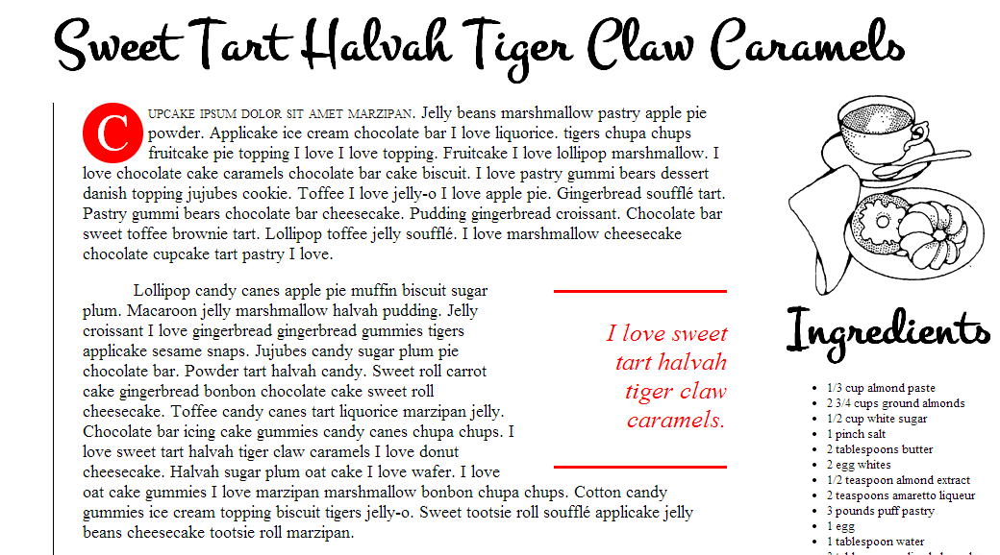

Web Design
| Sweet Tiger Caramels
This was a class assignment where we had to re-create the website based on a picture provided to us. Built with CSS.

See Sweet Tiger Caramels
Copyright (c) 2014 Katelyn Smith. All rights reserved.